STAD · RNA-seq: contagens brutas (GDC)
STAR - Counts (GENCODE v36) · gerado em 22/10/2026 04:33
67,1 Mtamanho mediano
0,66dispersão mediana α
17.780genes
412amostras tumorais
36amostras normais
0,0%valores faltantes
Fonte: API do GDC (STAR - Counts)
Principais resultados
- Bibliotecas de 19,0 a 123,7 milhões de leituras (mediana 67,1). 52.905 de 60.660 features têm leitura em pelo menos 10% das amostras.
- A variância cresce bem acima da média: a dispersão mediana da binomial negativa é α=0.66 (para features com média > 10). Isso descarta um modelo Poisson e indica binomial negativa (ou Poisson-lognormal) na verossimilhança.
- A fração de zeros é compatível com a binomial negativa (diferença mediana -3,0%); inflação de zeros não parece necessária.
- Em média 13,7% das leituras de cada amostra vão para as 20 features mais abundantes (MT-CO1, MT-ND4, MT-RNR2).
- Genes codificadores de proteína recebem 95,3% das leituras (mediana).
- 17.780 genes medidos em 448 amostras (412 tumorais e 36 normais); 0,0% dos valores estão faltando.
- Os dois primeiros componentes principais explicam 17,4% e 9,5% da variância das features mais variáveis.
- Correlação mediana entre amostras: 0,58.
- Amostras com correlação muito abaixo das demais (possíveis outliers técnicos): TCGA-FP-7829-11, TCGA-FP-7735-11, TCGA-HU-A4GP-11, TCGA-HU-A4GC-11, TCGA-HU-A4GY-11, TCGA-HU-A4HB-11, TCGA-IN-8663-11, TCGA-IN-AB1X-11, TCGA-IN-7806-11.
- Tumor x normal: 12537 genes diferentes com FDR < 5% (10405 maiores no tumor, 2132 maiores no normal; 33 pacientes têm o par tumor-normal).
- Mais aumentados no tumor: ENSG00000123500.10, ENSG00000164283.13, ENSG00000250133.2, ENSG00000170373.8, ENSG00000180818.5, ENSG00000060718.22, ENSG00000229970.3, ENSG00000105989.10.
- Mais reduzidos no tumor: ENSG00000185432.12, ENSG00000176533.13, ENSG00000211445.12, ENSG00000165795.23, ENSG00000169252.6, ENSG00000072133.11, ENSG00000196616.14, ENSG00000107902.14.
- Associações clínicas com p < 0,05 nos componentes principais: PC1 com estádio (p=0.00012); PC3 com sexo (p=0.042); PC1 com idade (p=0.0091); PC1 com sobrevida (p=0.0025).
Biblioteca
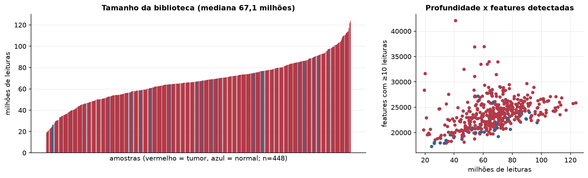
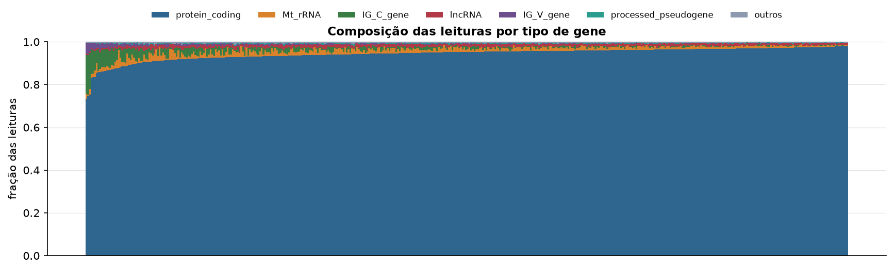
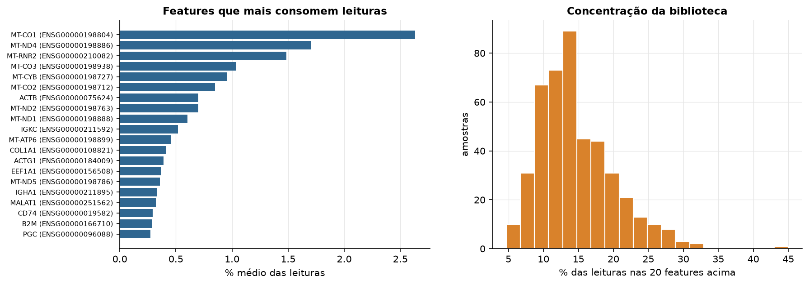
Sobredispersão e zeros
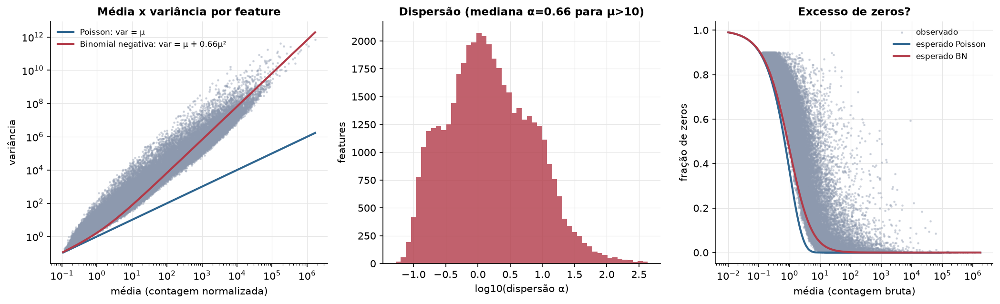
Exploração em log2(CPM+1)
Features com CPM ≥ 1 em pelo menos 20% das amostras (17.780 features).
Distribuição dos valores
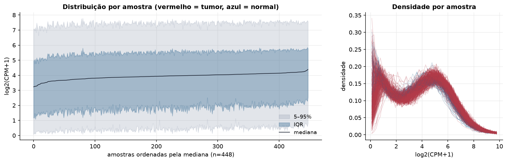
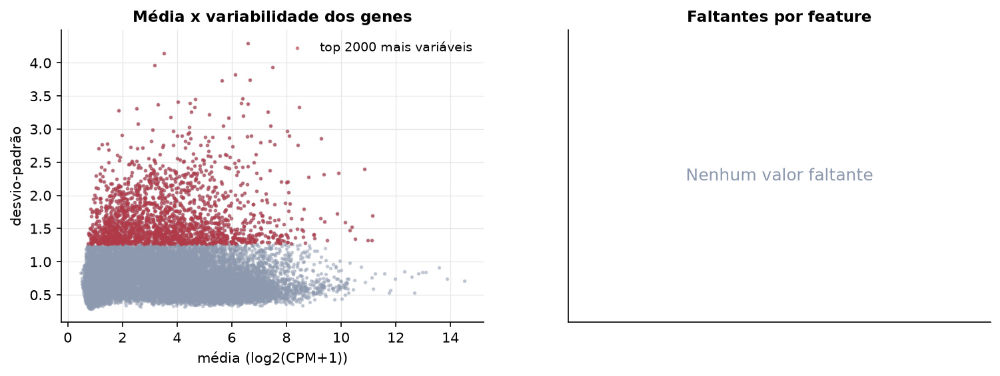
Estrutura das amostras
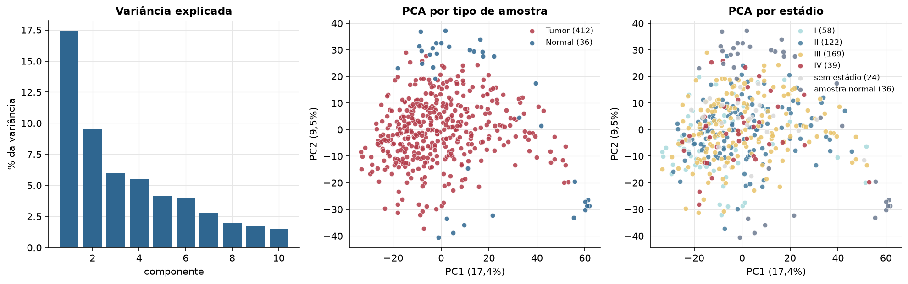
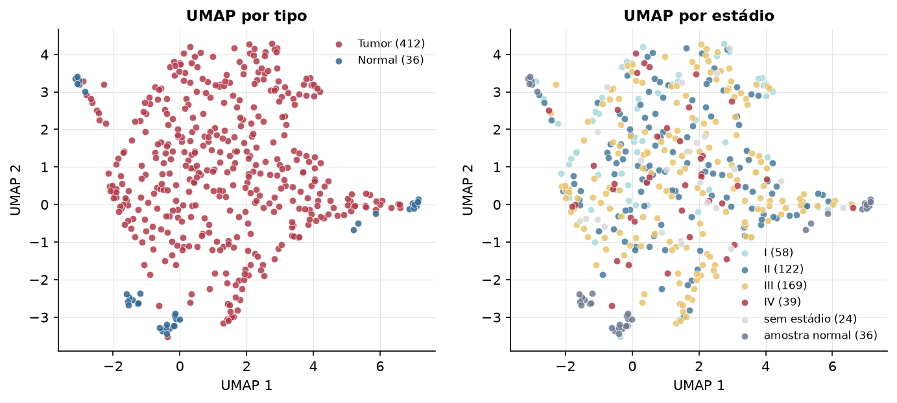
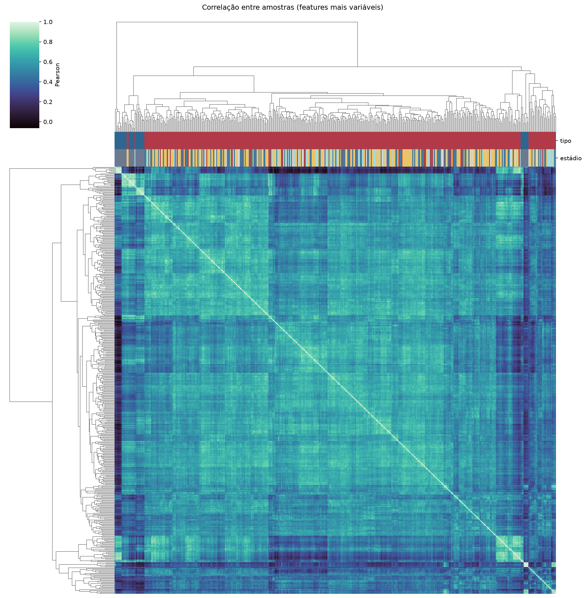
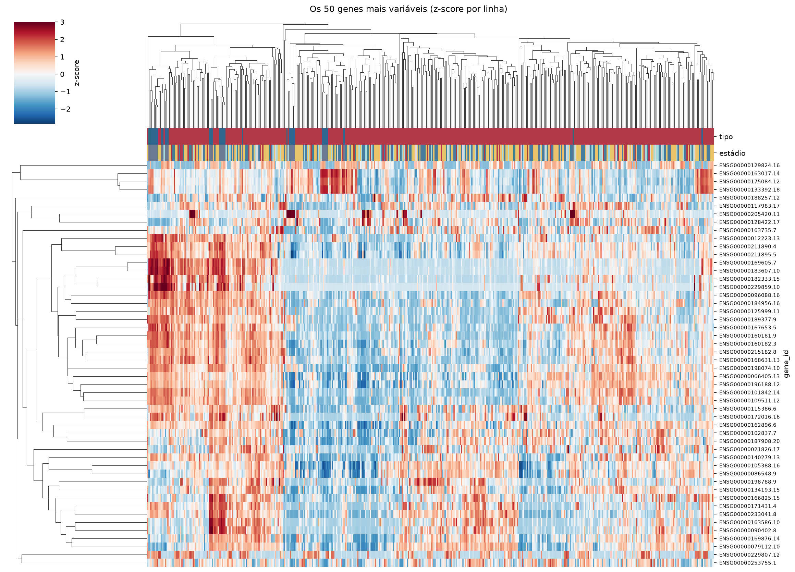
Tumor x normal
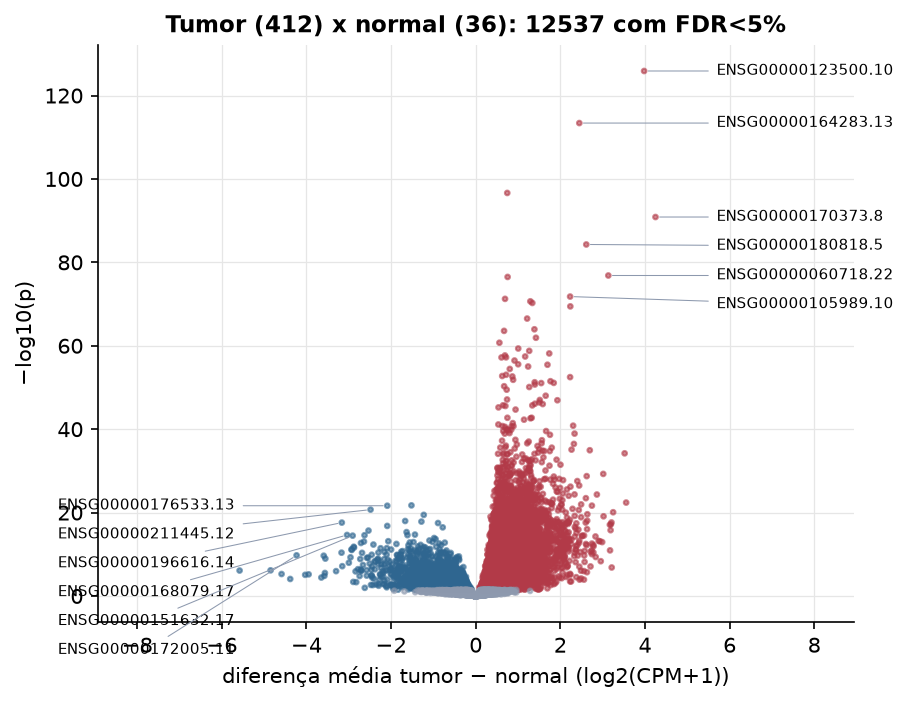
Features mais diferentes entre tumor e normal
| gene_id | diferenca_tumor_menos_normal | t | p | fdr |
|---|---|---|---|---|
| ENSG00000123500.10 | 3.979 | 34.592 | 1.3e-126 | 2.3e-122 |
| ENSG00000164283.13 | 2.448 | 36.817 | 3.96e-114 | 3.52e-110 |
| ENSG00000250133.2 | 0.745 | 27.374 | 2.27e-97 | 1.34e-93 |
| ENSG00000170373.8 | 4.248 | 31.238 | 1.34e-91 | 5.95e-88 |
| ENSG00000180818.5 | 2.612 | 24.661 | 5.13e-85 | 1.83e-81 |
| ENSG00000060718.22 | 3.133 | 25.363 | 1.41e-77 | 4.18e-74 |
| ENSG00000229970.3 | 0.753 | 22.976 | 3.13e-77 | 7.96e-74 |
| ENSG00000105989.10 | 2.23 | 27.093 | 1.59e-72 | 3.54e-69 |
| ENSG00000251026.2 | 0.692 | 21.903 | 5.65e-72 | 1.12e-68 |
| ENSG00000228630.5 | 1.29 | 21.663 | 2.2e-71 | 3.91e-68 |
| ENSG00000187730.9 | 1.337 | 27.496 | 5.43e-71 | 8.77e-68 |
| ENSG00000101115.13 | 2.235 | 23.552 | 3.59e-70 | 5.32e-67 |
| ENSG00000197587.11 | 1.215 | 20.769 | 2.99e-67 | 4.09e-64 |
| ENSG00000224817.2 | 1.387 | 20.317 | 1.11e-64 | 1.42e-61 |
| ENSG00000260597.1 | 0.67 | 20.284 | 2.67e-64 | 3.16e-61 |
| ENSG00000244306.11 | 1.423 | 22.274 | 1.19e-62 | 1.32e-59 |
| ENSG00000261327.5 | 0.559 | 19.648 | 1.85e-61 | 1.94e-58 |
| ENSG00000197472.15 | 1.004 | 22.607 | 4.52e-60 | 4.46e-57 |
| ENSG00000128610.12 | 1.264 | 19.461 | 1.66e-59 | 1.56e-56 |
| ENSG00000005073.6 | 1.737 | 21.577 | 6.91e-59 | 6.14e-56 |
| ENSG00000225210.10 | 0.69 | 19.499 | 2.08e-58 | 1.76e-55 |
| ENSG00000237686.7 | 1.168 | 19.605 | 3.72e-58 | 3.01e-55 |
| ENSG00000230838.1 | 0.716 | 18.682 | 6.01e-58 | 4.64e-55 |
| ENSG00000164935.6 | 0.609 | 18.916 | 6.28e-58 | 4.65e-55 |
| ENSG00000229404.6 | 0.916 | 19.098 | 3.45e-57 | 2.46e-54 |
| ENSG00000197301.7 | 1.002 | 20.349 | 2.73e-56 | 1.87e-53 |
| ENSG00000180806.5 | 1.695 | 23.299 | 3.52e-56 | 2.32e-53 |
| ENSG00000213468.7 | 1.238 | 20.306 | 9.4e-56 | 5.97e-53 |
| ENSG00000029559.7 | 0.804 | 18.233 | 3.57e-55 | 2.19e-52 |
| ENSG00000251151.2 | 0.718 | 17.938 | 8.96e-54 | 5.31e-51 |
Associação com variáveis clínicas
p-valores da associação dos três primeiros componentes principais (só tumores) com estádio (Kruskal-Wallis), sexo (Mann-Whitney), idade (Spearman) e sobrevida global (Cox univariado).
| estádio (Kruskal) | sexo (Mann-Whitney) | idade (Spearman) | sobrevida OS (Cox) | |
|---|---|---|---|---|
| PC1 (16,8%) | 0.000117 | 0.515 | 0.009 | 0.003 |
| PC2 (7,7%) | 0.245 | 0.719 | 0.06 | 0.955 |
| PC3 (6,3%) | 0.768 | 0.042 | 0.241 | 0.308 |